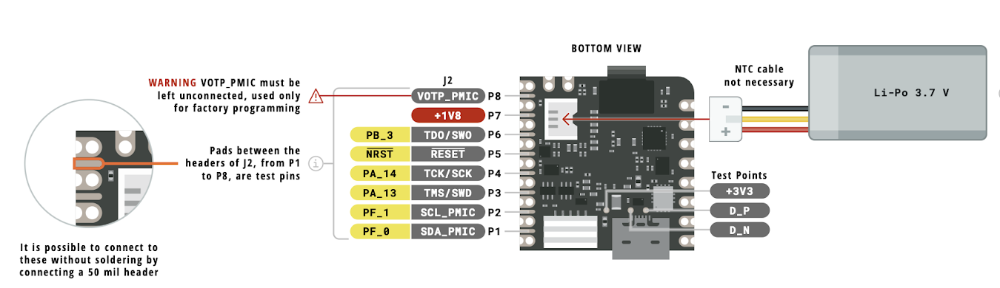
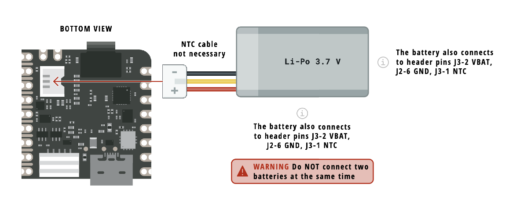

David Sousa-Rodrigues António Gonçalves 27 de Junho 2025
Apresentar as potencialidades do microcontrolador Arduino Nicla Vision (NV) numa perspetiva Hands-on.


Dual-core STM32H747, que inclui um ARM Cortex M7 a 480MHz e um ARM Cortex M4 a 240MHz. Entre eles comunicam via RPC (remote procedure calls).




YOLO (You Only Look Once)
Mobilenet
Ambos os modelos são bastante grandes para correrem diretamente num µC (embora haja versões lite).
FOMO (Fewer Objects, More Objects) Versão mais rápida e leve cujo objetivo é correr em µC edge.
Tipicamente os dispositivos edge requerem modelos pequenos quantizados para inteiros após o treino.
0. setup, se necessário.
1. Início (Pisca Pisca dos LEDs).
√ 11_blink.py
√ 12_blink_all.py
2. Sensores internos.
√ 21_vl531x_tof_1.py (rangefinder (tof))
√ inertial motion unit (imu)
√ microfone?
3. Captura de Imagem e Conectividade
√ 31_captura_fps.py (captura simples da câmara)
√ 32_ap_mode.py (streaming video P&B QVGA em modo AP)
4. Computer Vision e Machine Learning
√ teachable machine
train image classification
train sound
train pose
√ 41_blob_detection.py
√ 42_tf_object_detection.py (utiliza um modelo pré treinado para detetar caras)
Antes de conectar pela primeira vez a NV deve colocar a antena.
Verifique se tem o software OpenMV IDE instalado.
Ao conectar a NV ao computador o OpenMV IDE irá verificar se é necessário atualizar o firmware da mesma.


Pode-se forçar a tentativa de atualização (mesmo que já tenha o último firmware) colocando a placa em modo bootloader fazendo um duplo clique no botão reset. A placa fará fade-in-out do LED verde indicando estar em modo bootloader.
Ao comprar uma placa o primeiro objetivo é ver se está a funcionar.
Vamos colocar o LED RGB interno a funcionar de duas formas diferentes.
O código dos exercícios encontra-se na pasta
./code/1-inicio
11_blink.py contém instruções para acender o LED azul12_blink_all.py contém instruções para acender os 3 LEDs em sequência (Red, Green, Blue).Para experimentar cada um dos exemplos abra o ficheiro a partir do OpenMV IDE, conecte a Nicla Vision e depois corra o código.
11_blink.pyimport time
from machine import LED
TIME_TO_WAIT = 500
led = LED("LED_BLUE") # Also available: LED_RED, LED_GREEN
while True:
led.on()
time.sleep_ms(TIME_TO_WAIT)
led.off()
time.sleep_ms(TIME_TO_WAIT)
12_blink_all.pyimport pyb
TIME_TO_WAIT = 500
redLED = pyb.LED(1) # built-in red LED
greenLED = pyb.LED(2) # built-in green LED
blueLED = pyb.LED(3) # built-in blue LED
while True:
redLED.on()
pyb.delay(TIME_TO_WAIT)
redLED.off()
pyb.delay(TIME_TO_WAIT)
greenLED.on()
pyb.delay(TIME_TO_WAIT)
greenLED.off()
pyb.delay(TIME_TO_WAIT)
blueLED.on()
pyb.delay(TIME_TO_WAIT)
blueLED.off()
pyb.delay(TIME_TO_WAIT)
Nos dois exemplos apresentados observamos:
pyb e a biblioteca machinepyb é específica para a placa pyboard, vendida pelo micropython mas compatível com a Nicla Vision.machine é genérica para acomodar diversas boards.
—
https://docs.micropython.org/en/latest/index.htmlOs exemplos encontram-se na pasta
./code/2-sensores_internos
Código em 21_vl53l1x_tof_1.py

from machine import I2C
from vl53l1x import VL53L1X
import time
tof = VL53L1X(I2C(2))
while True:
print(f"Distance: {tof.read()}mm")
time.sleep_ms(50)
22_lsm6dsox_basic.pyimport time
from lsm6dsox import LSM6DSOX
from machine import Pin
from machine import SPI
lsm = LSM6DSOX(SPI(5), cs=Pin("PF6", Pin.OUT_PP, Pin.PULL_UP))
while True:
print("Accelerometer: x:{:>8.3f} y:{:>8.3f} z:{:>8.3f}".format(*lsm.accel()))
print("Gyroscope: x:{:>8.3f} y:{:>8.3f} z:{:>8.3f}".format(*lsm.gyro()))
print("")
time.sleep_ms(100)

A NV está equipada com um microfone omni-direcional
o código encontra-se no ficheiro 23_audio_fft.py. Importante notar os seguintes aspetos:
audio.start_streaming e audio.stop_streaming para começar e parar a capturanumpy em vez de vetores nativos pythonOs exemplos encontram-se na pasta
./code/3-captura-imagem
31_captura_fps.py - Ilustra a captura de imagens a partir da câmara da NV.32_ap_mode.py - Ilustra a utilização da NV como um ponto de acesso (AP) wifi.import sensor
import time
sensor.reset()
sensor.set_pixformat(sensor.RGB565)
sensor.set_framesize(sensor.QVGA) #Outros formatos são suportados
sensor.skip_frames(time=2000)
clock = time.clock()
while True:
clock.tick()
img = sensor.snapshot()
print(clock.fps())
Experimentar outros
framesizepara perceber as diferenças de performance eg: QQVGA, VGA, SVGA e XVGA, experimentar desligar a visualização.

Vamos tornar a NV num AP ao qual podemos aceder com o telemóvel.
32_ap_mode.pyNota, o código permite o estabelecimento da ligação de um cliente de cada vez apenas.
A parceria entre a Arduino e a Edge Impulse faz com que o treino de datasets para a Nicla Vision seja executado normalmente no website do Edge Impulse. No entanto, o treino de modelos no Edge Impulse é relativamente complicado para uma sessão tão curta. Para ilustrar os conceitos vamos utilizar o Teachable Machine da Google.


Teachable Machine ——— teachablemachine.withgoogle.com
- 1 Exemplo de deteção de imagens (objetos)
- 1 Exemplo de reconhecimento de som
- 1 exemplo de reconhecimento de poses
Deteção de Blobs
Aplicação de um modelo pré-treinado para deteção de caras

Teachable Machine é uma ferramenta online gratuita do Google que permite criar modelos de Machine Learning de forma simples e sem precisar programar.
Com ele, podemos treinar modelos para:
- Reconhecer imagens (ex: objetos, pessoas)
- Reconhecer sons (ex: palmas, fala)
- Reconhecer poses corporais (ex: gestos, movimentos)
Aceder em: https://teachablemachine.withgoogle.com/
As imagens capturadas não são enviadas para o Google. Ficam apenas no browser durante a execução do treino.

O Teachable Machine permite exportar estes modelos. No entanto, os modelos exportados não são compatíveis com a Nicla Vision, sendo apenas suportados pelo Arduino Nano 33 BLE Sense (EOL)
Os modelos tensorflow lite tem que ser quantitizados (pesos da rede neuronal tem que ser int8 em vez de float32), mas tal exige ter um conjunto de amostras representativas do modelo para obter os intervalos de dados.
Em alternativa pode-se treinar modelos no Edge Impulse (https://edgeimpulse.com/) que são compatíveis com a Nicla Vision (embora os projetos não sejam tão intuitivos de executar como no Teachable Machine)
A deteção de blobs procura definir regiões de uma imagem que possam ser consideradas uniformes (até uma determinada tolerância)
Blobs baseados na similaridade de cor
Abra o exemplo 41_blob_detection.py no editor OpenMV IDE.
O Detetor de blobs funciona em espaço de cor La*b*—Luminosidade, a*, e b*, sendo que o a* é b* representam a perceção de cor vermelho–verde e azul–amarelo

Pseudo-código 31_blob_detection.py
importa bibliotecas
define variáveis de captura da Nicla Vision
define mínimos e máximos para os diversos blobs
define um conjunto de cores para os representar
inicializa o relógio
loop continuo:
captura imagem
encontra blobs
para cada blob
desenha um retângulo e uma cruz no centro de cada blob
um pequeno delay
imprime o n.º de frames por segundo
41_blob_detection.pyblob1.blob2.
Tools > Machine Vision > Threshold Editor para definir os mínimos e máximos de uma forma visual.

Neste exemplo vamos utilizar um modelo pré treinado para a deteção de caras. O modelo pode ser encontrado na pasta
./code/4-machine-learningno exemplo42_tf_object_detection.py
fomo_face_detection.tflite e fomo_face_detection.txt para a raiz do volume da NV42_tf_object_detection.py no OpenMV e corra o modelo.A computação Edge está cada vez mais acessível.
A NV é relativamente acessível e relativamente fácil de utilizar.
Software + Hardware nem sempre ligam bem uma vez que o Software da Edge Impulse é também utilizado para outras placas com mais capacidades levando a erros e alguns crashes.